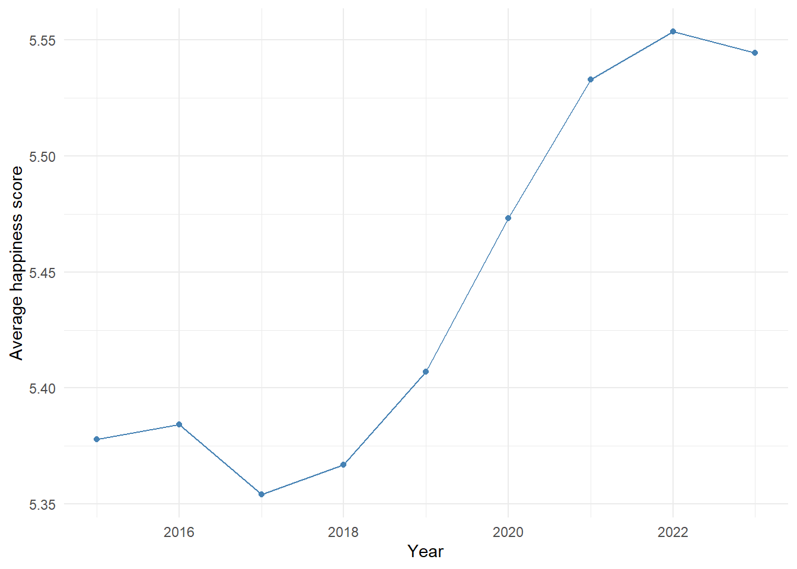
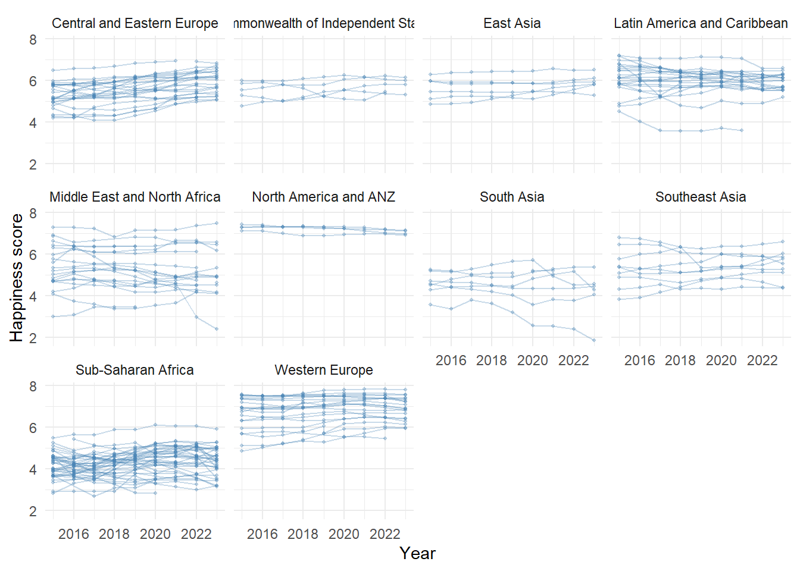
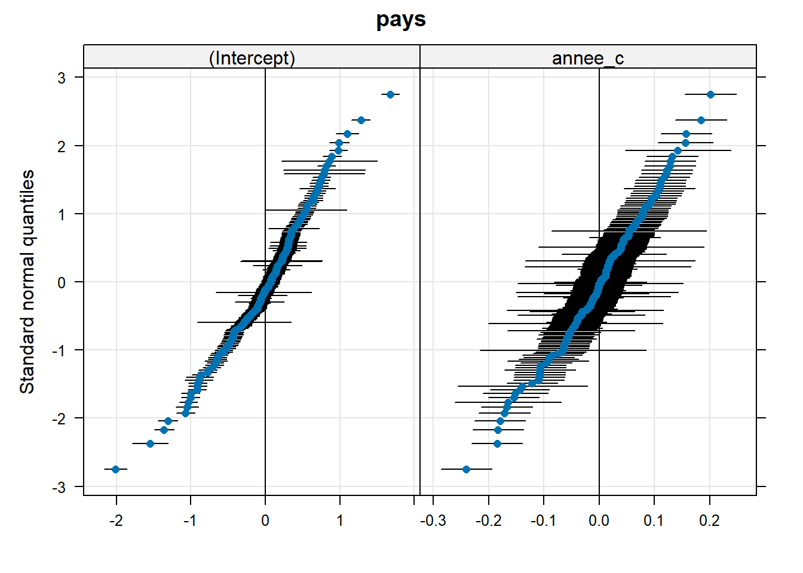
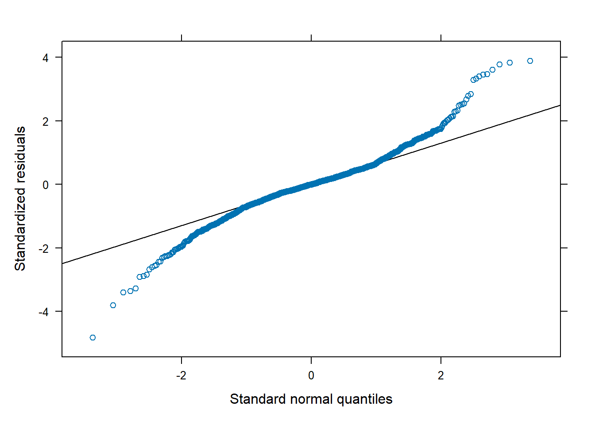
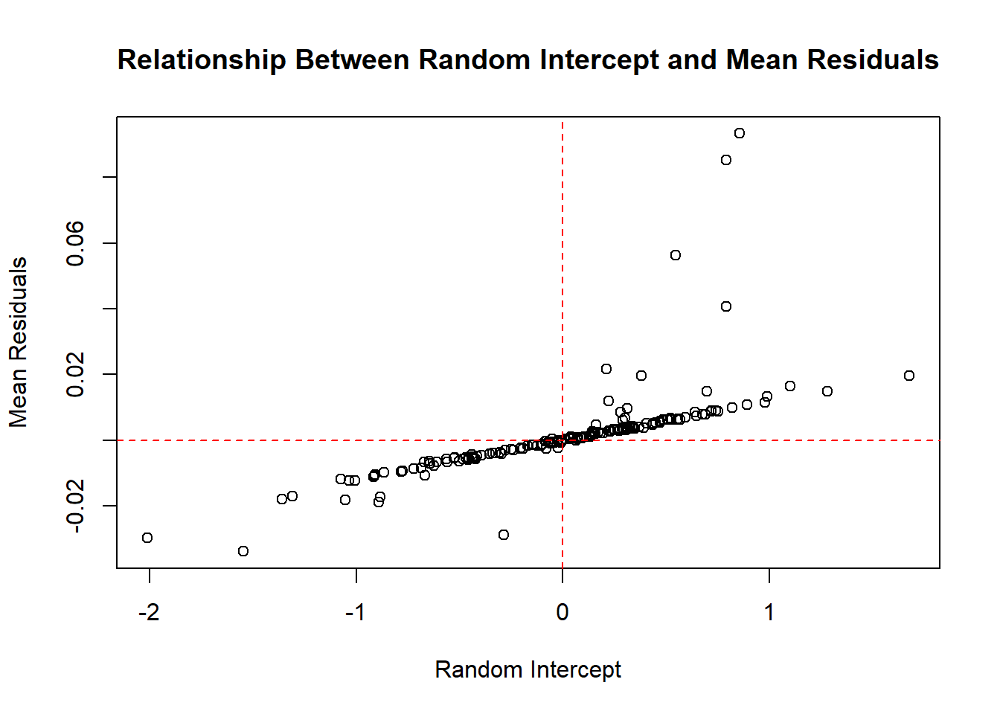

Linear Mixed Models (LMM) are statistical tools suited for analyzing grouped or longitudinal data (Pinheiro & Bates, 2000). They incorporate two types of effects: fixed effects, which are common to all observations, and random effects, which are specific to groups or individuals. This structure allows LMMs to capture between-group heterogeneity, which is often ignored by standard linear regression models (Ordinary Least Squares, OLS).
Despite their ability to account for both hierarchical and temporal dependencies in data, LMMs remain underused in many fields. Analyses still frequently rely on pooled OLS regressions, which overlook country-specific dynamics and longitudinal evolution. This is the case in the World Happiness Report (Helliwell et al.), where OLS models are applied to pooled data without modeling country-specific intercepts or trends, potentially biasing the estimation of happiness-related factors (Ferrer-i-Carbonell & Frijters, 2004).
The main objective of this study is to empirically demonstrate how LMMs better account for cross-country heterogeneity and temporal structure in longitudinal data.
2 Exploratory Analysis of the WHR Dataset
The dataset includes 1,363 observations covering 168 countries over the period 2015–2023. Each row represents the average happiness score for a specific country in a given year, along with six explanatory variables:
GDP per capita
Healthy life expectancy
Social support
Freedom to make life choices
Generosity
Perceptions of corruption
In addition, countries are grouped into major global regions (e.g., Western Europe, East Asia, Sub-Saharan Africa). The goal is to construct a Linear Mixed Model that explains the happiness score based on these variables, while accounting for the hierarchical structure of the data: repeated measures within countries, and countries nested within regions.
🧾 About the Response Variable
The happiness score used in the World Happiness Report originates from the Gallup World Poll. It is based on a single survey question:
“On a scale from 0 to 10, where 0 represents the worst possible life and 10 the best possible life, how would you rate your life currently?”
The score assigned to each country is the average of the individual responses collected. Unlike other indexes, the happiness score is not a composite index: the six explanatory variables (GDP, social support, etc.) are used only to explain the variation in happiness across countries. They do not contribute directly to the score’s construction.
2.1 Data preview
We start with a descriptive overview to understand how happiness varies over time, across countries and regions. Below is a preview of the raw dataset (first 5 rows):
whr_data %>%slice(1:5) %>%kable(caption ="Table 1 – First 5 observations of the WHR dataset (2015–2023)", digits =3)
Table 1 – First 5 observations of the WHR dataset (2015–2023)
pays
region
score_bonheur
pib_par_habitant
soutien_social
esperance_vie_saine
liberte_choix_vie
generosite
perception_corruption
annee
Switzerland
Western Europe
7.587
1.397
1.350
0.941
0.666
0.297
0.420
2015
Iceland
Western Europe
7.561
1.302
1.402
0.948
0.629
0.436
0.141
2015
Denmark
Western Europe
7.527
1.325
1.361
0.875
0.649
0.341
0.484
2015
Norway
Western Europe
7.522
1.459
1.331
0.885
0.670
0.347
0.365
2015
Canada
North America and ANZ
7.427
1.326
1.323
0.906
0.633
0.458
0.330
2015
📎 Source: Author’s computation based on WHR data (2015–2023)
2.2 Temporal variation in global happiness
We begin by examining the evolution of the global average happiness score between 2015 and 2023. This helps determine whether global happiness remained stable or changed over time. Figure 1 shows the average score for each year.
# Calculate yearly mean happiness scoremean_by_year <- whr_data %>%group_by(annee) %>%summarize(moyenne_bonheur =mean(score_bonheur, na.rm =TRUE))# Plot average score by yearggplot(mean_by_year, aes(x = annee, y = moyenne_bonheur)) +geom_line(color ="steelblue") +geom_point(size =1.5, color ="steelblue") +labs(x ="Year",y ="Average happiness score" ) +theme_minimal()

Figure 1 – Global average happiness score by year
📎 Source: Author’s computation based on WHR data (2015–2023)
Between 2015 and 2018, the global score remained relatively stable around 5.35–5.38. From 2019 onward, we observe a gradual increase, peaking at 5.56 in 2022, before slightly declining in 2023. This trend suggests a global temporal effect. To account for this dynamic in the model, we will include a fixed effect for year. A random slope by country may also be considered if the trend differs across countries.
2.3 Variation across countries and regions
We continue the analysis by examining differences in happiness scores between countries, taking into account their regional affiliation. To do this, we plot the trajectories of happiness scores over time for each country, grouped by major geographical region.
Each line represents the evolution of a single country between 2015 and 2023. This visualization allows us to assess whether countries within the same region follow similar trends or not.
ggplot(whr_data, aes(x = annee, y = score_bonheur, group = pays)) +geom_line(alpha =0.3, color ="steelblue") +geom_point(alpha =0.3, color ="steelblue", size =0.8) +facet_wrap(~ region) +labs(x ="Year",y ="Happiness score" ) +theme_minimal() +theme(legend.position ="none")

Figure 2 – Happiness score trajectories by country and region
📎 Source: Author’s computation based on WHR data (2015–2023)
Figure 2 shows that happiness levels vary across countries and regions. Some regions, such as Western Europe and North America and ANZ, have high and relatively stable scores across countries. Others, like Sub-Saharan Africa and South Asia, exhibit lower scores and greater dispersion.
In certain regions—such as Southeast Asia—country curves are close to one another, suggesting a shared trend. In contrast, Middle East and North Africa shows greater variability between countries.
We also observe that some countries lack data for every year, introducing imbalance in the longitudinal structure.
These results highlight both cross-country differences and inter-regional disparities. For the upcoming modeling, it may be appropriate to include a random effect by country to account for country-specific characteristics. The region can also be included, either as a fixed effect (if we wish to compare regions explicitly) or as a random effect (if treated as a sample of possible geographic clusters).
3 Mixed Model Specification: Choice of Fixed and Random Effects
The exploratory analysis revealed three main sources of variation: persistent differences between countries, different temporal dynamics across countries, and disparities between regions. To address these, we progressively test three random effects:
A random intercept by country, to model differences in average happiness levels across countries
A random slope for year by country, to capture country-specific temporal trends
A random intercept by region, to account for similarities between countries within the same region
3.1 Random Intercept by Country
We start by introducing a random intercept for each country. This allows each country to have its own baseline happiness level, centered around a global intercept β0 shared across countries.
The model is written as:
score_bonheur = β0 + β1 · annee_c + α0_pays + ε
Where:
β0: global intercept (interpreted as the average happiness score in 2019)
β1: fixed effect for the centered year
α0_pays: random intercept specific to each country
ε: residual error
This effect is essential for modeling the within-country correlation over time and will be kept in all subsequent models.
library(lme4)# Centering the year variablewhr_data$annee_c <-scale(whr_data$annee, center =TRUE, scale =FALSE)# Model with random intercept by countrymod_intercept_pays <-lmer(score_bonheur ~ annee_c + (1| pays),data = whr_data, REML =FALSE)
📝 Note on Centering the Year Variable
To improve model estimation and interpretation, we center the annee variable around its mean:
whr_data$annee_c <-scale(whr_data$annee, center =TRUE, scale =FALSE)
This means that a value of 0 for annee_c corresponds to the average year in the dataset, i.e., 2019. As a result, the intercept β0 can be interpreted as the average happiness score for 2019.
Centering also improves numerical stability, especially when including random slopes. This practice is recommended in the lme4 documentation.
3.2 Random Slope for Year by Country
We next test whether the evolution of happiness over time varies by country. To do this, we add a random slope for year by country, in addition to the random intercept.
Where α1_pays allows each country to have its own time trend.
# Model with random intercept and slope by countrymod_pente_pays <-lmer(score_bonheur ~ annee_c + (annee_c | pays),data = whr_data, REML =FALSE)# Likelihood ratio test vs. the simpler modelanova(mod_intercept_pays, mod_pente_pays) %>%kable(caption ="Table 2 – Likelihood ratio test between the two models",digits =2)
Table 2 – Likelihood ratio test between the two models
npar
AIC
BIC
logLik
deviance
Chisq
Df
Pr(>Chisq)
mod_intercept_pays
4
1417.47
1438.34
-704.73
1409.47
NA
NA
NA
mod_pente_pays
6
700.17
731.48
-344.09
688.17
721.29
2
0
📎 Source: Author’s computation based on WHR data (2015–2023)
The likelihood ratio test confirms that the model with random slopes significantly improves model fit compared to the simpler model with only a random intercept (Chisq = 721.29, df = 2). The two degrees of freedom correspond to the added variance of the slope and its covariance with the intercept. This confirms that year effects vary across countries, justifying the inclusion of a random slope.
3.3 Modeling the Region Variable
Countries in the dataset are grouped into major geographic regions (Western Europe, East Asia, Sub-Saharan Africa, etc.). The exploratory analysis showed that some regions tend to have higher or lower average happiness scores.
In the mixed model, the region variable can be treated either as a fixed effect or as a random effect.
Fixed effect: Each region is explicitly estimated via a separate coefficient, allowing direct comparison. This approach is appropriate when the number of regions is small and their effects are of direct interest.
Random effect: The region is treated as an additional source of variability, assumed to be drawn from a broader population of possible regions. This is useful when the goal is to capture variance rather than interpret region-specific effects.
In our case, regions are few, predefined, and of substantive interest. We therefore choose to model region as a fixed effect. This will allow us to interpret the differences in mean happiness across major world regions more clearly.
3.4 Selection of Explanatory Fixed Effects
The WHR dataset provides several quantitative variables designed to explain reported happiness scores. These include:
pib_par_habitant: Gross Domestic Product (GDP) per capita, reflecting the average economic wealth and overall performance of a country.
soutien_social: Perceived social support during difficult times. Based on the question: Do you have someone (friends or family) to count on in times of trouble?
esperance_vie_saine: Healthy life expectancy, combining longevity and physical/mental health. Mental health is a key driver of subjective well-being.
liberte_choix_vie: Satisfaction with the freedom to choose what one does with one’s life. Also relates to fundamental human rights such as freedom of speech, education, work, and opinion.
generosite: Altruistic behavior, measured by recent donations (e.g., during the past month). A proxy for community engagement and social connection.
perception_corruption: Perceived corruption in both public institutions and private businesses, derived from questions about trust in government and the corporate world.
These variables are part of the official methodology of the World Happiness Report and are theoretically considered determinants of happiness. Given their relevance, all six variables are retained in the model as fixed effects, without prior variable selection. This ensures methodological coherence with the WHR and enables a clear interpretation of each variable’s contribution to happiness levels.
3.5 Final Mixed Model Specification
The final Linear Mixed Model includes:
Fixed effects:
Centered year (annee_c)
Region
The six explanatory variables listed above
Random effects:
A random intercept and a random slope for year, both at the country level
β1 to β7 are coefficients for the quantitative predictors (pib, soutien, vie_saine, etc.)
γ_r is the fixed effect for region r
α0_pays is the country-specific random intercept
α1_pays is the country-specific random slope on centered year
ε is the residual error term
4 Estimation and Interpretation of the Final Model
We now estimate the selected Linear Mixed Model using the lmer() function, including the previously identified fixed effects, along with a random intercept and a random slope on year at the country level.
library(lmerTest)library(broom.mixed)library(knitr)# Fit the final modelmod_final <-lmer( score_bonheur ~ annee_c + region + pib_par_habitant + soutien_social + esperance_vie_saine + liberte_choix_vie + generosite + perception_corruption + (annee_c | pays),data = whr_data)
Tables 3a and 3b present the fitted model results, including both random-effect variances and fixed-effect estimates. Fixed-effect p-values were computed using the Satterthwaite approximation via the lmerTest package.
# Table 3a: Fixed effectsfixed_effects <-tidy(mod_final, effects ="fixed")kable( fixed_effects,caption ="Table 3a – Fixed Effects from the Linear Mixed Model",digits =3)
Table 3a – Fixed Effects from the Linear Mixed Model
effect
term
estimate
std.error
statistic
df
p.value
fixed
(Intercept)
4.908
0.159
30.800
358.425
0.000
fixed
annee_c
0.012
0.008
1.581
225.449
0.115
fixed
regionCommonwealth of Independent States
-0.165
0.290
-0.571
138.169
0.569
fixed
regionEast Asia
-0.003
0.268
-0.013
136.443
0.990
fixed
regionLatin America and Caribbean
0.326
0.170
1.921
140.150
0.057
fixed
regionMiddle East and North Africa
-0.291
0.176
-1.647
141.340
0.102
fixed
regionNorth America and ANZ
1.145
0.323
3.544
144.992
0.001
fixed
regionSouth Asia
-1.072
0.242
-4.422
142.726
0.000
fixed
regionSoutheast Asia
-0.514
0.233
-2.210
144.070
0.029
fixed
regionSub-Saharan Africa
-1.224
0.155
-7.878
166.216
0.000
fixed
regionWestern Europe
0.881
0.180
4.893
151.843
0.000
fixed
pib_par_habitant
-0.014
0.044
-0.310
1220.100
0.757
fixed
soutien_social
0.040
0.031
1.303
1100.111
0.193
fixed
esperance_vie_saine
0.289
0.064
4.507
1177.976
0.000
fixed
liberte_choix_vie
0.878
0.121
7.273
1326.759
0.000
fixed
generosite
0.535
0.182
2.934
1306.492
0.003
fixed
perception_corruption
0.491
0.224
2.192
1305.237
0.029
📎 Source: Author’s computation based on WHR data (2015–2023)
# Table 3b: Random effects (variances, covariances, residuals)random_effects <-tidy(mod_final, effects ="ran_pars")kable( random_effects,caption ="Table 3b – Random Effects from the Linear Mixed Model",digits =3)
Table 3b – Random Effects from the Linear Mixed Model
effect
group
term
estimate
ran_pars
pays
sd__(Intercept)
0.584
ran_pars
pays
cor__(Intercept).annee_c
0.058
ran_pars
pays
sd__annee_c
0.085
ran_pars
Residual
sd__Observation
0.190
📎 Source: Author’s computation based on WHR data (2015–2023)
4.1 Fixed Effects
The fixed effects coefficients estimate the average impact of each explanatory variable on happiness, all else equal.
The fixed intercept is estimated at 4.908 (p < 0.001). It represents the average happiness score in 2019 (the centered year) for a country in the reference region, with all quantitative variables set to zero.
A one-unit increase in freedom to make life choices (liberte_choix_vie) is associated with a +0.878 increase in happiness score (p < 0.001).
Healthy life expectancy (esperance_vie_saine) has a positive and significant effect: +0.289 (p < 0.001).
Generosity (generosite) and perceived corruption (perception_corruption) also show positive associations, estimated at +0.535 (p = 0.003) and +0.491 (p = 0.029), respectively.
In contrast, GDP per capita (pib_par_habitant), social support (soutien_social), and centered year (annee_c) do not exhibit significant effects in this model.
4.1.1 Regional Fixed Effects
The reference category for region is Central and Eastern Europe. Compared to this baseline:
Western Europe: +0.881 (p < 0.001)
North America and ANZ: +1.145 (p = 0.001)
South Asia: −1.072 (p < 0.001)
Sub-Saharan Africa: −1.224 (p < 0.001)
Other regions do not significantly differ from the reference region.
4.2 Random Effects
The model includes both a random intercept and a random slope on year for each country, allowing the model to capture country-specific variations.
The random intercept allows each country to have its own average happiness level around the fixed intercept (4.908). The estimated variance is 0.341 (0.584²), indicating notable between-country heterogeneity.
The random slope lets each country follow its own trend over time. Its variance is 0.007 (0.085²), showing some differences in how happiness evolves across countries.
The correlation between intercept and slope is close to zero (0.06), suggesting no systematic link between a country’s baseline happiness and the direction of its temporal trend.
The residual variance is 0.036 (0.190²), representing the share of happiness variation not explained by the model.
5 Model Diagnostics
We now evaluate the assumptions underlying the Linear Mixed Model by analyzing the random effects, residuals, and their independence.
5.1 Normality of Random Effects
# Load lattice packagelibrary(lattice)# Extract random effectsrr <-ranef(mod_final)# QQ-plot to assess normality of random effectsqqmath(rr)
$pays

Figure 3 – QQ-plot of random effects (intercept and slope for annee_c)
📎 Source: Author’s computation based on WHR data (2015–2023)
Figure 3 shows that the points generally follow the diagonal. Despite some deviations at the extremes, the assumption of normality for the random effects is not seriously violated.
5.2 Normality of Residuals
# QQ-plot of Pearson residualsqqmath(mod_final, form =~resid(., type ="pearson"))

Figure 4 – QQ-plot of Pearson residuals
📎 Source: Author’s computation based on WHR data (2015–2023)
Figure 4 suggests that residuals roughly align with the diagonal, although several points deviate, especially in the tails. This indicates a mild departure from the normality assumption.
5.3 Independence Between Random Effects and Residuals
# Mean of residuals by countryranefs <-ranef(mod_final, condVar =TRUE)$paysres_mean <-tapply(residuals(mod_final), whr_data$pays, mean)# Plot: Random intercept vs mean residualsplot(ranefs[,"(Intercept)"], res_mean,xlab ="Random Intercept",ylab ="Mean Residuals",main ="Relationship Between Random Intercept and Mean Residuals")abline(h =0, v =0, col ="red", lty =2)

Figure 5 – Relationship between random intercept and average residuals by country
📎 Source: Author’s computation based on WHR data (2015–2023)
Figure 5 shows a positive relationship between the estimated random intercept for each country and its average residual. This pattern suggests a potential violation of the assumption of independence between random effects and residuals.
6 Model Performance Assessment
To evaluate the performance of the model, we compute coefficients of determination (R²) specifically adapted to linear mixed models. Unlike classical linear regression, several definitions of R² exist for mixed-effects models. The performance package provides two widely used measures introduced by Nakagawa & Schielzeth (2013):
Marginal R² (R²ₘ): proportion of variance in the happiness score explained only by the fixed effects (e.g., GDP, freedom, life expectancy).
Conditional R² (R²𝒄): proportion of variance explained by the entire model, including both fixed effects and random effects (e.g., between-country heterogeneity).
Higher values of R² indicate that the model explains a greater share of the outcome variability.
library(performance)# Compute R² for the linear mixed modelr2_values <-r2(mod_final)kable( r2_values,digits =3)
Table 4 – Coefficient of determination
x
Conditional R2
0.97
x
Marginal R2
0.65
📎 Source: Author’s computation based on WHR data (2015–2023)
The marginal R² is 0.65, meaning that the fixed effects alone explain 65% of the variance in happiness scores.
The conditional R² reaches 0.97, indicating that the full model—including country-level random effects—accounts for 97% of the total variance.
7 Conclusion
This study aimed to illustrate the use of Linear Mixed Models (LMM) with data from the World Happiness Report (WHR). These models allowed us to jointly model both cross-country differences and temporal evolution in happiness scores.
The results highlight that several factors have a significant effect on national happiness:
- Freedom to make life choices (+0.878)
- Healthy life expectancy (+0.289)
- Generosity (+0.535)
- Perception of corruption (+0.491)
Clear regional disparities are observed. Compared to the reference region (Central and Eastern Europe), we find:
- Western Europe: +0.881
- North America and ANZ: +1.145
- Sub-Saharan Africa: −1.224
- South Asia: −1.072
The model reveals substantial between-country heterogeneity, with a random intercept variance of 0.341. On the other hand, the random slope variance is lower (0.007), suggesting limited differences in the evolution of happiness over time. The correlation between initial levels and temporal trends is also weak (0.06).
Overall, the model fits the data well, with a conditional R² of 0.97, indicating that the combined fixed and random effects explain 97% of the variance in happiness scores.
However, implementing LMMs requires careful assumption checks. In this application, a dependence was observed between residuals and the random intercept, calling into question the assumption of independence. This suggests that the random structure may need revision, or that non-Gaussian mixed models could be more appropriate.
Possible extensions include:
- Studying the impact of assumption violations on the estimates
- Comparing alternative random structures
- Exploring corrective approaches
These steps would help better understand how methodological choices influence the results obtained from hierarchical modeling.